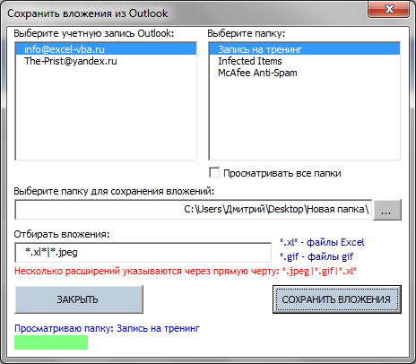

Tips_GetOutlookAttach.xls (54,0 KiB, 870 скачиваний)
Tips_GetOutlookAttach.xls (54,0 KiB, 870 скачиваний)Сохранить вложения из Outlook в папку
Сегодня я хотел бы поделиться очередным решением с использованием Outlook. Задача сохранить все файлы Excel, хранящиеся как вложения, из папки Входящие(Inbox) на диск. Решение достигается только применением кода на VBA. Код ниже не имеет практически никаких настроек - он просто сохраняет абсолютно все вложения Excel из папки Входящие(включая подпапки):
Sub SaveAttachedItemsFromOutlook() Dim objOutlApp As Object, oNSpace As Object, oIncoming As Object Dim oIncMails As Object, oMail As Object, oAtch As Object Dim IsNotAppRun As Boolean Dim sFolder As String, s As String 'диалог запроса выбора папки с файлами With Application.FileDialog(msoFileDialogFolderPicker) If .Show = False Then Exit Sub sFolder = .SelectedItems(1) End With sFolder = sFolder & IIf(Right(sFolder, 1) = Application.PathSeparator, "", Application.PathSeparator) 'отключаем обновление экрана, чтобы наши действия не мелькали Application.ScreenUpdating = False 'подключаемся к Outlook On Error Resume Next Set objOutlApp = GetObject(, "outlook.Application") If objOutlApp Is Nothing Then Set objOutlApp = CreateObject("outlook.Application") IsNotAppRun = True End If 'получаем доступ к папкам почты Set oNSpace = objOutlApp.GetNamespace("MAPI") 'подключаемся к папке Входящие, почтового ящика по умолчанию Set oIncoming = oNSpace.GetDefaultFolder(6) 'Удаленные ==> GetDefaultFolder(3) 'Исходящие ==> GetDefaultFolder(4) 'Отправленные ==> GetDefaultFolder(5) 'Входящие ==> GetDefaultFolder(6) 'получаем коллекцию писем Входящие(включая подпапки) Set oIncMails = oIncoming.Items 'просматриваем каждое письмо For Each oMail In oIncMails 'просматриваем каждое вложение письма For Each oAtch In oMail.Attachments 'отбираем только файлы Excel If oAtch Like "*.xl*" Then s = GetAtchName(sFolder & oAtch) oAtch.SaveAsFile s End If Next Next 'Если приложение Outlook было открыта кодом - закрываем If IsNotAppRun Then objOutlApp.Quit End If 'очищаем переменные Set oIncMails = Nothing Set oIncoming = Nothing Set oNSpace = Nothing Set objOutlApp = Nothing 'возвращаем ранее отключенное обновление экрана Application.ScreenUpdating = True End Sub '--------------------------------------------------------------------------------------- ' Procedure : GetAtchName ' Purpose : Функция получения уникального имени файла ' если файл с именем s уже есть - добавляет номер в скобках '--------------------------------------------------------------------------------------- Function GetAtchName(ByVal s As String) Dim s1 As String, s2 As String, sEx As String Dim lu As Long, lp As Long s1 = s lp = InStrRev(s, ".", -1, 1) If lp Then sEx = Mid(s, lp) s1 = Mid(s, 1, lp - 1) End If s2 = s lu = 0 Do While (Dir(s2, 16) <> "") lu = lu + 1 s2 = s1 & "(" & lu & ")" & sEx Loop GetAtchName = s2 End Function
Код необходимо поместить в стандартный модуль и запустить. Или скачать приложенный ниже файл - там уже есть и кнопка для запуска:
Tips_GetOutlookAttach.xls (54,0 KiB, 870 скачиваний)
Макросы должны быть разрешены. Если не знаете что это такое - Что такое макрос и где его искать?
После запуска код попросит указать папку, в которую сохранять вложения. После этого все вложения, являющиеся файлами Excel, будут сохранены в указанную папку. Если имена каких-то вложений совпадают, то к имени файла в скобках добавляется номер (х).
Код имеет некоторые недостатки:
Именно из-за наличия такого количества недостатков я написал другой код - более сложный. Приводить в статье его не буду, т.к. он состоит из нескольких модулей и формы пользователя - проще будет скачать файл ниже и посмотреть. Вот как он выглядит в работе:

Как работает: скачиваете файл
Tips_GetOutlookAttach_Advanced.xls (91,5 KiB, 1 098 скачиваний)
После открытия файла нажимаете на кнопку и появляется форма(как на картинке выше).
В левом списке формы уже будут отображены все учетные записи Outlook. Необходимо выбрать нужную. После выбора учетной записи в правом списке отобразятся все папки, созданные для этой учетной записи в папке Входящие. Если выбрать одну или несколько папок, то будут просматриваться вложения исключительно в выбранных папках. Если ничего не выбрать - программа уточнит, действительно ли не планировалось выбирать ни одной папки и надо ли просматривать абсолютно все письма только в папке Входящие(исключая подпапки).
Просматривать все папки - если установлен, то вложения будут просматриваться во всех письмах папки Входящие(включая все подпапки).
Выберите папку для сохранения вложений - кнопкой справа от поля выбирается папка, в которую надо сохранить все найденные вложения.
Отбирать вложения - указываются маски для типов файлов, которые необходимо отбирать. По умолчанию установлена маска "*.*" - отбирать все файлы. Однако можно указать любой тип файлов. Например, если указать "*.jpeg" - будут отобраны исключительно рисунки с расширением .jpeg. Если необходимо отбирать файлы более одного типа, то все маски можно перечислить через прямую черту - |. Например, чтобы отобрать все файлы Word, Excel и PowerPoint следует указать такую маску: "*.doc*|*.xl*|*.ppt*". Тут есть и еще один нюанс - таким образом можно указать маску не только форматов, но и имен файлов. К примеру, чтобы отобрать только файлы Excel, содержащие в имени слово "отчет" необходимо задать такую маску: "*отчет*.xl*".
После нажатия СОХРАНИТЬ ВЛОЖЕНИЯ внизу формы отобразится информационное окно, показывающее в какой папке идет поиск вложений и каков прогресс выполнения операции поиска в этой папке(на картинке это зеленая полоса внизу формы). Если имена каких-то вложений совпадают, то к имени файла в скобках добавляется номер (х).